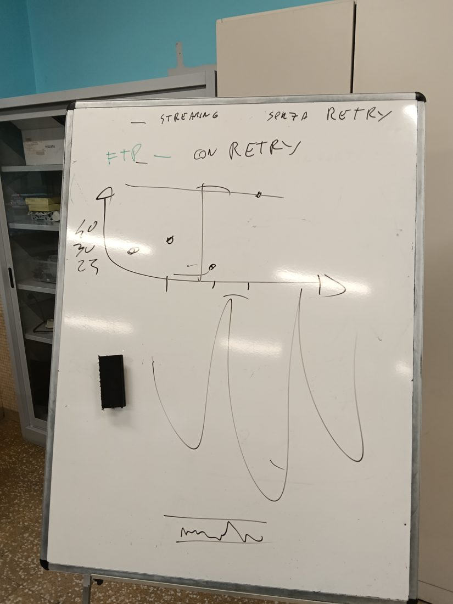
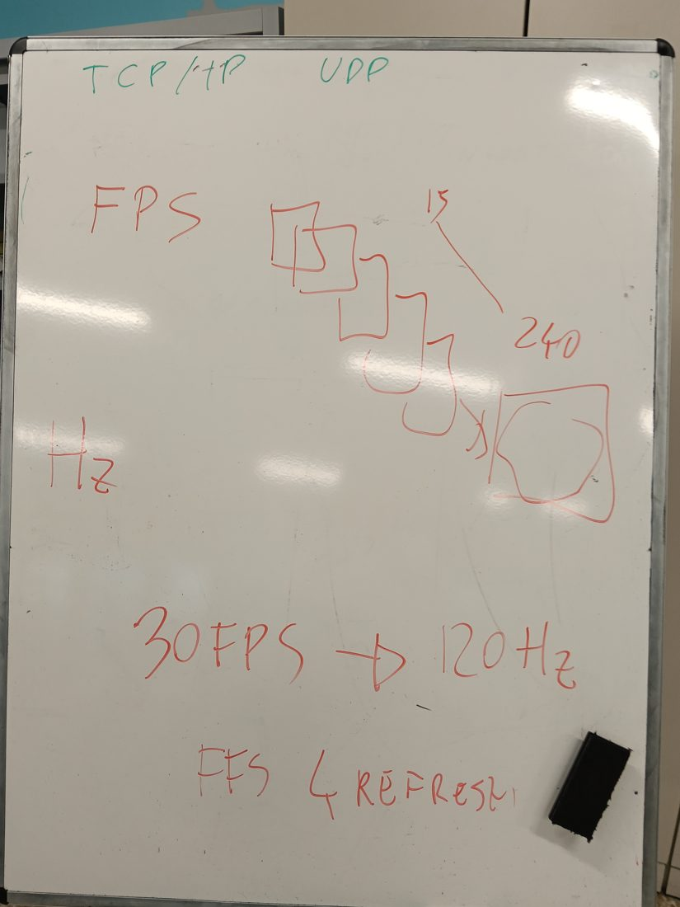
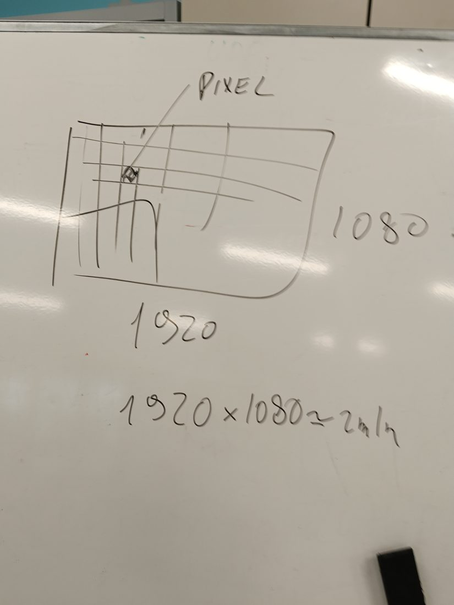
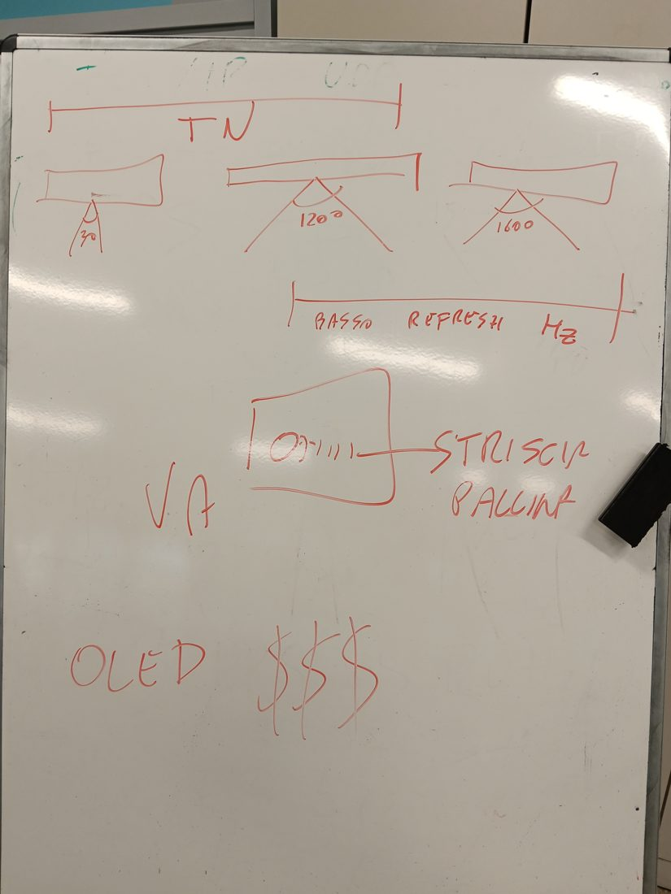

网络与游戏
延迟(ping)、抖动(jitter)、TCP 和 UDP、帧率 FPS 和刷新率 Hz、像素、显示器、显卡、视频线
一年级 · 2026年10月23日的课 · v1.0
这份讲义整理了这节课：幻灯片、黑板照片和很多带计算的例子。最后有“你来试试”练习和答案。TCP、FPS、Hz 这些词保留英文字母，因为在游戏和设置里你看到的就是这样写的。
01 延迟(ping)
ping 是一条消息从你的电脑到游戏服务器再返回所需要的时间。单位是毫秒 (ms)：1000 ms = 1 秒。
| ping | 游戏感觉 |
|---|
| 30 ms 以下 | 非常好 |
| 30-60 ms | 好 |
| 60-100 ms | 有一点感觉 |
| 150 ms 以上 | 卡顿(lag)：子弹打出去晚到 |
ping 主要取决于你和服务器之间的距离，而不是网速 Mbps。
例子你在米兰的服务器上玩：ping 15 ms。同一个游戏在美国的服务器上：ping 120 ms。你的网络是一样的（100 Mbps），只是消息走的路变长了。ping 120 ms 时，你按“开枪”，服务器 60 ms 后才收到（路程的一半）：这时对手已经移动了。

课堂上的黑板: 上面：在线播放不重传，FTP 会重传（第 03 章）。中间：ping 的图，时间是 23、30、40 ms，还有一个很高的尖峰。下面：抖动的波浪。
02 抖动(jitter)
抖动就是 ping 每时每刻变化多少。
例子测到的 ping：40、41、39、40 ms。只变化 1-2 ms：抖动低，游戏很平稳。
测到的 ping：20、120、30、110 ms。变化大约 100 ms：抖动高，人物会跳，有时会“瞬移”。
黑板上：大波浪是断断续续的连接（抖动高）；下面几乎是直线的是稳定的连接（抖动低）。
注意一直稳定的 50 ms，比在 20 和 120 ms 之间跳来跳去的 ping 更好。
03 重传还是不重传：TCP 和 UDP
在网络里，数据被分成数据包，也就是小块来传送。有时一个数据包会在路上丢失。发送数据有两种规则，叫做协议：
| 协议 | 如果丢了一个数据包 | 优点 | 用在哪里 |
|---|
| TCP | 重新发送（重传，英文 retry） | 全部到达，顺序正确 | 文件 (FTP)、网页、邮件、下载 |
| UDP | 不重新发送（不重传） | 更快，延迟更小 | 在线播放、视频通话、网络游戏 |
例子你用 FTP 下载一个文件：只要少一个数据包，文件就坏了，所以 TCP 会重发。在网络游戏里，丢一个数据包只是一个小卡顿：如果等它，游戏就会停住，所以用 UDP。
注意记忆方法：TCP 像带回执的挂号信；UDP 像塞进信箱的广告单：到得更快，但丢了也没人再发。TCP/IP 是整个互联网规则家族的名字。
04 延迟、卡顿和丢包
| 词 | 意思 | 原因 |
|---|
| lag（延迟） | 游戏反应慢 | ping 高 |
| 网络卡顿 | 动作一跳一跳 | 抖动高 |
| 丢包 | 有些信息没有到达 | Wi-Fi 信号弱，网络太挤 |
| 电脑卡顿 | 没有网络时画面也卡 | 显卡太慢（FPS 低） |
例子不连网玩游戏也卡：问题不在网络，而在显卡。如果只有在线时才卡，就检查 ping 和抖动，并试试用网线代替 Wi-Fi。
注意网线的 ping 和抖动比 Wi-Fi 低：所以玩家都用网线。
05 帧率(FPS)
视频或游戏是由很多静止的图片一张接一张显示出来的，就像动画片。FPS 是 “frame per second”，意思是每秒多少张图片。这些图片由显卡来做。
| FPS | 看起来怎样 |
|---|
| 15 | 一卡一卡的 |
| 30 | 可以接受：电影和老游戏机 |
| 60 | 流畅 |
| 144 以上 | 非常流畅，适合快速游戏 |
例子60 FPS 时，每张图片在屏幕上停留 1000 ÷ 60 ≈ 17 ms。30 FPS 时停留 1000 ÷ 30 ≈ 33 ms，是两倍：看起来不够流畅。144 FPS 时大约停留 7 ms。
06 显示器的刷新率(Hz)
Hz（赫兹）表示显示器每秒重新画多少次画面。英文叫 “refresh rate”，刷新率。
注意规则：显卡的 FPS 和显示器的 Hz 要互相匹配。
例子显卡 30 FPS，显示器 120 Hz：显示器每秒画 120 次，但只有 30 张新图片。每张图片显示 4 次（120 ÷ 30 = 4）：快的显示器浪费了。
显卡 200 FPS，显示器 60 Hz：你每秒还是只能看到 60 张图片：显卡浪费了。
显卡 144 FPS，显示器 144 Hz：完全匹配，最流畅。

课堂上的黑板: 上面：TCP/IP 和 UDP。中间：一排图片（每秒 15 到 240 张）。下面：30 FPS 在 120 Hz 显示器上，每张图片重复 4 次。
07 像素和分辨率
屏幕是由彩色小方块组成的网格：每个小方块叫做像素 (pixel)。分辨率表示宽和高各有多少像素。
| 名称 | 宽 × 高 | 像素总数（约） |
|---|
| HD | 1280 × 720 | 90 万 |
| Full HD | 1920 × 1080 | 200 万 |
| 2K (QHD) | 2560 × 1440 | 370 万 |
| 4K | 3840 × 2160 | 830 万 |
例子1920 × 1080 = 2,073,600，大约 200 万像素。
4K 的宽是 Full HD 的两倍，高也是两倍：2 × 2 = 4 倍的 Full HD。所以需要更强的显卡。

课堂上的黑板: 像素网格和计算 1920 × 1080 ≈ 200 万。
08 显示器的种类
屏幕可以用不同的方式做成，叫做面板。可视角度表示从侧面看，多大角度还能看清颜色。
| 面板 | 角度（黑板） | 优点 | 缺点 |
|---|
| TN | 约 90° | 非常快（Hz 高），便宜 | 颜色暗淡，角度窄 |
| IPS | 120° | 颜色好看，侧面也看得清 | 稍微慢一点 |
| VA | 160° | 黑色深，对比度好 | 运动的东西后面有拖影 |
| OLED | 很宽 | 完美的黑色，非常快 | 很贵 |
在 VA 屏幕上，移动的小球会留下拖影，特别是暗的画面：这叫 ghosting，“鬼影”。响应时间（1-5 ms）表示一个像素变颜色有多快：越低，拖影越少。
例子玩快速射击游戏、钱不多的人：选 TN 或快速的 IPS。在黑暗中看电影的人：选 VA 或 OLED。想要最好、也能花钱的人：选 OLED。
注意现在 IPS 和 VA 面板的角度已经接近 178°，也有 144-240 Hz 的 IPS：黑板上的数字是为了帮你理解不同面板的区别。

课堂上的黑板: 可视角度（90°、120°、160°），VA 的拖影，很贵的 OLED。
09 显卡
显卡（英文 GPU）负责画出游戏的画面。集成显卡：在处理器里面，耗电少，适合学习和看视频。独立显卡：单独的一块卡，有自己的显存（VRAM，比如 8 GB），玩大型游戏需要它。
例子上学、看视频、用 Classroom，集成显卡就够了。玩 Full HD、144 FPS 的 3D 游戏，需要至少 8 GB 显存的独立显卡。
10 图片和电影有多大
每个像素的颜色由 3 个字节组成：红、绿、蓝。
例子一张 Full HD 照片：2,073,600 像素 × 3 字节 = 6,220,800 字节，大约 6 MB。JPG 格式把它压缩（变小）到大约 0.5-1 MB。
一部 2 小时的电影每秒显示 24 张图片：6 MB × 24 = 每秒 144 MB；2 小时 = 7200 秒；144 × 7200 = 1,036,800 MB，大约 1000 GB。用 MP4 压缩后大约 2 GB：小了 500 倍。所以网速不高也能在线播放。
11 视频线和带宽
电脑用视频线连接显示器：VGA（旧的，蓝色 15 针插头，画面不太清楚），DVI（数字，白色），HDMI（数字，也能传声音，最常见），DisplayPort（数字，用于游戏显示器）。带宽是每秒通过线的数据量：像素 × 24 位颜色 × Hz。
| 线 | 最大带宽（约） |
|---|
| HDMI 1.4 | 10 Gbit/s |
| HDMI 2.0 | 18 Gbit/s |
| DisplayPort 1.4 | 32 Gbit/s |
| HDMI 2.1 | 48 Gbit/s |
例子Full HD、60 Hz：1920 × 1080 × 24 × 60 = 每秒 2,985,984,000 位，大约 3 Gbit/s：HDMI 1.4 也够。
4K、144 Hz：3840 × 2160 × 24 × 144 = 大约 28.7 Gbit/s：HDMI 2.0（18）不够，需要 DisplayPort 1.4（32）或 HDMI 2.1（48）。
12 完整例子：我的游戏装备
这是为一个快速游戏选的装备，带计算。然后轮到你，用你最喜欢的游戏来做。
| 什么 | 选择 | 为什么 |
|---|
| 游戏 | 在线射击游戏 | 需要快 |
| 网络 | 网线，ping 低于 30 ms | ping 和抖动低 |
| 显示器 | IPS，Full HD，144 Hz | 快，颜色好看 |
| 显卡 | 独立显卡，8 GB 显存 | Full HD 下能到 144 FPS |
| 视频线 | DisplayPort 1.4 | 1920 × 1080 × 24 × 144 ≈ 7.2 Gbit/s：HDMI 2.0 也够 |
13 你来试试
- 测到的 ping：35、36、34、35 ms。抖动高还是低？
- 显卡 60 FPS，显示器 240 Hz：每张图片显示几次？
- 1280 × 720 的屏幕有多少像素？
- 下载游戏更新：用 TCP 还是 UDP？队伍语音聊天呢？
- 不连网时游戏也卡：是网络的问题还是显卡的问题？
- 2K（2560 × 1440）、60 Hz 的显示器：HDMI 1.4 线够吗？
答案- 低：只变化 1-2 ms。
- 4 次：240 ÷ 60 = 4。
- 1280 × 720 = 921,600 像素。
- 更新用 TCP：文件必须完整到达。语音用 UDP：小跳一下比延迟好。
- 显卡的问题（FPS 低）。
- 2560 × 1440 × 24 × 60 ≈ 5.3 Gbit/s：够，HDMI 1.4 能到 10。
14 新词
| 词 | 意思 |
|---|
| ping（延迟） | 消息往返的时间，单位 ms |
| jitter（抖动） | ping 变化多少 |
| lag | 游戏里的延迟 |
| 数据包 | 在网络上传送的一小块数据 |
| 协议 | 发送数据的规则（TCP、UDP） |
| FPS | 显卡每秒做出的图片数 |
| Hz | 显示器每秒重画几次 |
| 像素 (pixel) | 屏幕上的彩色小方块 |
| 分辨率 | 宽的像素 × 高的像素 |
| 面板 | 屏幕的种类：TN、IPS、VA、OLED |
| VRAM（显存） | 显卡的内存 |
| 带宽 | 每秒通过的数据量 |